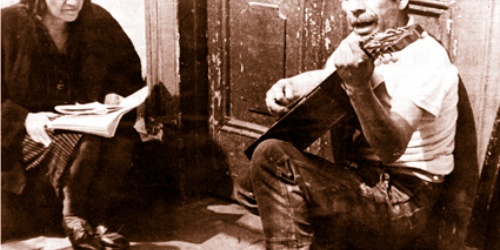

Nota de tapa
Violeta Parra: Una voz para todas las voces

Artista múltiple, Violeta Parra supo desplegar su arte a través de canciones, esculturas, bordados, tapices, pinturas... pero más supo acercarse al pueblo hasta fundirse en él. Un recorrido por la Violeta peregrina y por su infancia, etapa clave donde encontró ...